Overview
TOPIA is a teaching model for energy-system optimization. Its Reference Energy System (RES) links primary resources, conversion technologies, storage, trade, and electricity demand across up to twelve regions.
The complete model is packaged as
topia$modules$electricity. Smaller cases are cut from it
with subset_model_regions() rather than kept as separate
saved layouts.
Conventions
TOPIA uses uppercase set elements and typed process names.
Set elements are uppercase: regions, commodities, technologies, groups, and user-defined timeslices use names such as
W1,COA, andECOA.-
Process names carry a type prefix:
Prefix Process family SUP_supply of a fuel / primary energy ( SUP_COA,SUP_GAS)RES_supply of a renewable resource ( RES_HYD)STG_storage ( STG_ELC)TRD_inter-regional trade (uni-directional) TBD_inter-regional trade (bi-directional, TBD_ELC_W1_W2)IMP_import from the rest of the world EXP_export to the rest of the world Electricity generating technologies use an uppercase mnemonic with
Efixed prefix, such asECOAandESOL.
Units
TOPIA uses the following units:
| quantity | unit | where it is declared |
|---|---|---|
| electricity, and the renewable resources feeding it | GWh | commodity@units$comm |
| coal, gas, biomass, nuclear fuel | PJ | commodity@units$comm |
| emissions | kt | commodity@units$comm |
| capacity (plants, storage power, corridors) | GW |
cap2act fixes the link |
| investment cost | MUSD/GW | invcost |
| storage reservoir | GWh, priced MUSD/GWh |
duration, stg.invcost
|
| fuel cost, import price | MUSD/PJ (= USD/GJ) |
supply@cost, import@price
|
Electricity and renewable-resource flows use GWh; fuels use PJ.
@units$comm records the unit but does not convert values.
Explicit conversions appear in:
-
cap2act– GW of capacity to GWh of annual activity. -
ceff$use2cact– the PJ-to-GWh bridge on a fuel-burning plant. -
trade@cap2act– GW of corridor capacity to GWh of annual flow.
Conversion efficiency is dimensionless in
ceff$cinp2use.
Regions and the map
TOPIA has twelve regions, R01–R12. The
squares, honeycomb, island, and
continent layouts in topia$geoscales share
these region names: each layout draws them in different places, chosen
so that every zone comes out as one compact group of neighbours, and the
model sees only the codes.
R01 is the remote region. It is detached on two of the
four layouts and carries no transmission at all, so it has to meet its
own demand in every hour from what it holds locally.
gs <- topia$geoscales$honeycomb
regions <- geoscale_regions(gs, geoframe = "region")
regions
#> [1] "R01" "R02" "R03" "R04" "R05" "R06" "R07" "R08" "R09" "R10" "R11" "R12"
# the zones the fossil fuels balance on, and where the rest of the world
# reaches the model
zones <- geoscale_regions(gs, geoframe = "zone")
zones
#> [1] "Z1" "Z2" "Z3" "Z4" "Z5"
plot_geoscale(gs, type = "map")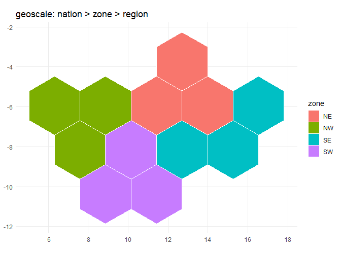
Zones: the region hierarchy
The regions nest into five zones of uneven size and one nation.
geoscale_leaftable() returns this hierarchy.
geo <- as.data.frame(geoscale_leaftable(gs))
knitr::kable(geo, caption = "Regional hierarchy")| nation | zone | region | name | area |
|---|---|---|---|---|
| TOPIA | Z1 | R01 | Region 01 | 5.657862 |
| TOPIA | Z2 | R02 | Region 02 | 5.657862 |
| TOPIA | Z2 | R03 | Region 03 | 5.657862 |
| TOPIA | Z3 | R04 | Region 04 | 5.657862 |
| TOPIA | Z3 | R05 | Region 05 | 5.657862 |
| TOPIA | Z3 | R06 | Region 06 | 5.657862 |
| TOPIA | Z4 | R07 | Region 07 | 5.657862 |
| TOPIA | Z4 | R08 | Region 08 | 5.657862 |
| TOPIA | Z4 | R09 | Region 09 | 5.657862 |
| TOPIA | Z4 | R10 | Region 10 | 5.657862 |
| TOPIA | Z5 | R11 | Region 11 | 5.657862 |
| TOPIA | Z5 | R12 | Region 12 | 5.657862 |
The zones are deliberately uneven – 1, 2, 3, 4 and 2 regions. A zone is where the fossil fuels balance, so its size decides how large a pool a region can draw on, and an even grouping would have made that uniform and uninteresting.
| zone | regions | resource | load |
|---|---|---|---|
Z1 |
R01 |
the island: the best wind in the model and the least sun, alone and with no wire | small, winter-peaking |
Z2 |
R02–R03
|
the sun: the highest solar yield, little wind, the domestic gas | moderate, evening peak |
Z3 |
R04–R06
|
the firm interior: the nuclear station, the mountain reservoir, the calmest air in the model | large and flat, industrial |
Z4 |
R07–R10
|
the belt: run-of-river, the lignite basin, forestry, and the north-coast wind at its eastern end | mixed |
Z5 |
R11–R12
|
the windy coast: exposed sites at both regions, poor sun | small, dense at the load centre |
Each region is endowed differently, and the endowment is what the
model is about: R01 an island with no wire and no fuel of
its own, R02 and R03 the solar potential with
R03 holding the domestic gas, R04 the nuclear
incumbent, R05 the reservoir, R06 industry,
R07 run-of-river, R08 the lignite basin,
R09 forestry and the first exposed coast, R10
the wind peak, R11 the load centre, R12 the
second wind peak.
Solar and wind are available everywhere – what differs is which grades of each a region can offer, and the capacity factor its own weather delivers. The grades are measured rather than assigned: see “Input profiles” below.
gg_geoscale(gs,
type = "stack", view = "pyramid", direction = "up",
outline = c("zone"), outline_colour = "black",
frame = TRUE, frame_fill = alpha("grey60", 0.10)
)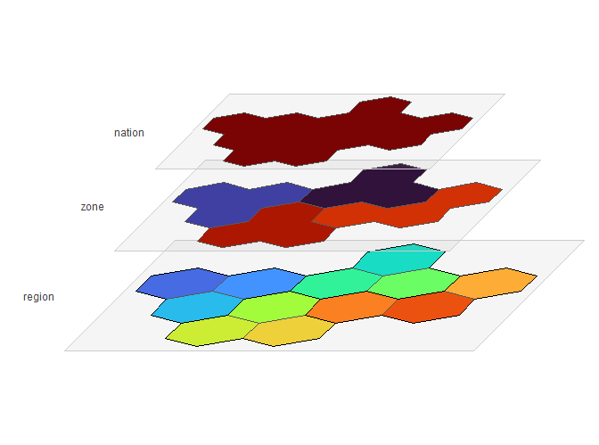
Time resolution
The base calendar is the full hourly year: 365 days of 24 hours,
8,760 timeslices. The measured resource grades below are hourly series,
and the things this model is about – a multi-day lull, a storage cycle,
a corridor that saturates in one hour and idles in the next – only exist
at that resolution. Smaller calendars are cut from it when a case needs
to be quick: d365_h24_1dpm keeps one day a month and
weights it, which is the same year seen through 288 timeslices.
calendar <- topia$modules$calendars$d365_h24
autoplot(calendar)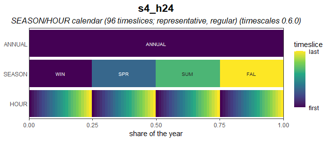
Horizon
The horizon contains four milestone years: 2025, 2030, 2040, and 2050. The first of them is one year wide and the rest stand for ten, with the milestone in the MIDDLE of its period – so costs are discounted from the middle of the decade they represent rather than from its end.
2025 is the base year, declared with
base_year =. A base year is given rather than decided: it
is solved on its own by solve_base_year(), and what it
holds crosses into the projection as stock. The projection then
optimises 2030, 2040 and 2050. TOPIA II: running scenarios runs
both halves.
Marking it also disciplines the input data. Everything standing in 2025 has to be stated as capacity, because the base-year solve will otherwise build whatever the fleet is short of – and any capacity it builds, or leaves idle, is a statement about the assumptions rather than about the system.
horizon <- topia$modules$horizons$BY2025_50_by10
horizon@base_year
#> [1] 2025
horizon@intervals
#> start mid end label
#> <num> <num> <num> <char>
#> 1: 2025 2025 2025 2025
#> 2: 2026 2030 2035 2030
#> 3: 2036 2040 2045 2040
#> 4: 2046 2050 2055 2050
autoplot(horizon)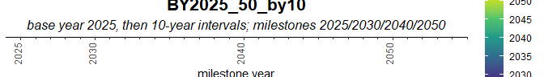
Input profiles
topia_profiles() returns weather, demand, and base-year
stock profiles for a selected region set and calendar.
# `d365_h24` selects the MEASURED dataset: hourly 2025 series, with wind in
# three site grades and solar in two mountings. The smaller calendars carry a
# simulated stand-in instead, which has no grades.
prof <- topia_profiles(regions = regions, calendar = "d365_h24")
head(prof$weather, 3)
#> resource cluster region timeslice wval
#> 1 WHYD <NA> R01 d001_h00 1
#> 2 WHYD <NA> R01 d001_h01 1
#> 3 WHYD <NA> R01 d001_h02 1
head(prof$demand, 3)
#> region timeslice load
#> 1 R01 d001_h00 1.1518
#> 2 R01 d001_h01 1.1474
#> 3 R01 d001_h02 1.1385
# head(prof$stock, 3) # !!! should not be here, stock is not a profileCommodities
The model has ten commodities. COA and GAS
are annual zone-level commodities; BIO, NUC,
LANDS, LANDW, and CO2 are annual;
and HYD, H2, and ELC are hourly.
Electricity is balanced by region. Solar and wind carry no fuel: their
technologies are driven by a weather profile and consume nothing but
land. The two land commodities are separate pools, so solar siting and
wind siting do not compete for the same hectares.
COA <- newCommodity(
name = "COA",
desc = "Steam coal",
unit = "PJ",
timeframe = "ANNUAL", # no sub-annual balances
geoframe = "zone", # balancing on zone-level makes it moving freely
# between all regions in each zone
emis = data.frame(
comm = "CO2",
unit = "kt/PJ",
emis = 95
)
)
GAS <- newCommodity(
name = "GAS",
desc = "Natural gas",
unit = "PJ",
timeframe = "ANNUAL",
geoframe = "zone",
emis = data.frame(
comm = "CO2",
unit = "kt/PJ",
emis = 56
)
)
BIO <- newCommodity(
name = "BIO",
desc = "Biomass residues, carbon-neutral",
unit = "PJ",
timeframe = "ANNUAL",
geoframe = "region" # the lower level in Topia is named "region"
)
NUC <- newCommodity(
name = "NUC",
desc = "Nuclear fuel assemblies",
unit = "PJ",
timeframe = "ANNUAL"
)
HYD <- newCommodity(
name = "HYD",
desc = "River inflow",
unit = "GWh",
timeframe = "HOUR"
)
LANDS <- newCommodity(
name = "LANDS",
desc = "Land suitable for solar siting",
unit = "km2",
timeframe = "ANNUAL",
geoframe = "region"
)
LANDW <- newCommodity(
name = "LANDW",
desc = "Land suitable for wind siting",
unit = "km2",
timeframe = "ANNUAL",
geoframe = "region",
# tiers, not labels: exposed coast, open country and inland terrain must not
# pool, so the commodity becomes one balance per tier and a clustered wind
# farm draws on the tier its own cluster names. The three tiers match the
# measured wind grades -- a region holds land in a tier only where its own
# cells reach that grade.
cluster = data.frame(
cluster = c("HI", "MD", "LO"),
desc = c("exposed coast and ridge", "open country", "inland terrain"),
order = 1:3
)
)
H2 <- newCommodity(
name = "H2",
desc = "Hydrogen, lower heating value",
unit = "GWh",
timeframe = "HOUR",
geoframe = "region"
)
ELC <- newCommodity(
name = "ELC",
desc = "Electricity",
unit = "GWh",
timeframe = "HOUR"
)
CO2 <- newCommodity(
name = "CO2",
desc = "Carbon dioxide",
unit = "kt",
timeframe = "ANNUAL"
)
repo_commodities <- newRepository(
name = "topia_commodities",
COA, GAS, BIO, NUC, LANDS, LANDW, HYD, H2, ELC, CO2
)Supply and resources
Each fossil fuel comes from one zone and one only: coal from
Z4, where the lignite basin is, gas from Z2,
where the shale is. The other zones have neither, so everything they
burn arrives over a corridor or from the rest of the world – which is
what gives the map a direction and the corridors something to carry.
R01 is the exception twice over: it is alone in
Z1, so it is in neither fuel’s zone and no wire reaches it
either. It burns the biomass available in every region, runs on its own
weather, and buys the rest from the rest of the world. Nuclear fuel is
supplied in R04. For zone-pooled fuels, ava.up
applies to the entire zone.
None of the three is a single price. A resource gets dearer as it is
used up – the accessible seam first, then the deep one – and that is a
supply curve: the quantity split into steps, each
dearer than the last, declared as clusters of one supply
object. The model buys the cheap step first because it is cheaper, not
because anything orders it to.
# A curve that does not move is a snapshot. Both fossil curves travel: the
# quantity on every step grows as more of the resource becomes reachable,
# while the price goes the other way for coal (mechanization outruns
# depletion) and the same way for gas (the easy fields go first).
fuel_steps <- data.frame(
cluster = c("S1", "S2", "S3"),
order = 1:3
)
fuel_path <- tibble::tribble(
~fuel, ~year, ~price_x, ~volume_x,
"COA", 2025, 1.00, 1.00,
"COA", 2030, 0.95, 1.10,
"COA", 2040, 0.88, 1.25,
"COA", 2050, 0.80, 1.40,
"GAS", 2025, 1.00, 1.00,
"GAS", 2030, 1.05, 1.15,
"GAS", 2040, 1.15, 1.35,
"GAS", 2050, 1.30, 1.50
)
# The 2025 curve, which the path above moves. `asSupplyCurve()` is the
# shortcut when a curve stands still -- its `price` is absolute, so it cannot
# carry a trajectory, and the steps are written out instead.
fuel_base <- tibble::tribble(
~fuel, ~region, ~cluster, ~price0, ~ava0,
"COA", "Z4", "S1", 1.4, 100,
"COA", "Z4", "S2", 1.8, 100,
"COA", "Z4", "S3", 2.6, 100,
"GAS", "Z2", "S1", 3.2, 120,
"GAS", "Z2", "S2", 4.0, 120,
"GAS", "Z2", "S3", 5.6, 120
)
# every step meets every year, which is the expansion wanted here -- said
# out loud, because dplyr warns about a many-to-many join it has to infer
fuel_supply <- fuel_base |>
left_join(fuel_path, by = "fuel", relationship = "many-to-many") |>
mutate(cost = price0 * price_x, ava.up = ava0 * volume_x) |>
select(fuel, region, cluster, year, ava.up, cost) |>
arrange(fuel, cluster, year)
coa_supply <- fuel_supply |> filter(fuel == "COA") |> select(-fuel)
gas_supply <- fuel_supply |> filter(fuel == "GAS") |> select(-fuel)
knitr::kable(
coa_supply,
digits = 2,
caption = "Coal: three steps, each cheaper and larger over the horizon"
)| region | cluster | year | ava.up | cost |
|---|---|---|---|---|
| Z4 | S1 | 2025 | 100 | 1.40 |
| Z4 | S1 | 2030 | 110 | 1.33 |
| Z4 | S1 | 2040 | 125 | 1.23 |
| Z4 | S1 | 2050 | 140 | 1.12 |
| Z4 | S2 | 2025 | 100 | 1.80 |
| Z4 | S2 | 2030 | 110 | 1.71 |
| Z4 | S2 | 2040 | 125 | 1.58 |
| Z4 | S2 | 2050 | 140 | 1.44 |
| Z4 | S3 | 2025 | 100 | 2.60 |
| Z4 | S3 | 2030 | 110 | 2.47 |
| Z4 | S3 | 2040 | 125 | 2.29 |
| Z4 | S3 | 2050 | 140 | 2.08 |
SUP_COA <- newSupply(
name = "SUP_COA",
desc = "Domestic coal, pooled within a zone",
units = data.frame(
activity = "PJ",
costs = "MUSD"
),
commodity = "COA",
unit = "PJ",
region = "Z4",
cluster = fuel_steps |>
mutate(desc = c("open cast", "shallow seam", "deep seam")),
supply = coa_supply
)
SUP_GAS <- newSupply(
name = "SUP_GAS",
desc = "Domestic gas, pooled within a zone",
units = data.frame(
activity = "PJ",
costs = "MUSD"
),
commodity = "GAS",
unit = "PJ",
region = "Z2",
cluster = fuel_steps |>
mutate(desc = c("associated gas", "conventional", "tight")),
supply = gas_supply
)
autoplot(SUP_GAS, style = "map", map = gs)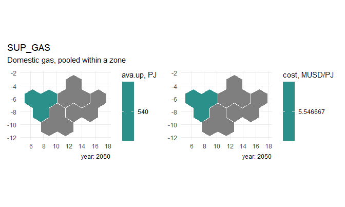
# Biomass follows the land rather than the geology: the forestry region is
# plentiful and cheap, the arid west and the load centre thin and dear. Three
# steps per region -- the easy quarter, the bulk, and the tail that has to be
# collected from far away.
bio <- tibble::tribble(
~region, ~bio_PJ, ~bio_cost,
"R01", 10, 9.5,
"R02", 12, 9.0,
"R03", 18, 8.0,
"R04", 35, 7.0,
"R05", 40, 6.5,
"R06", 35, 7.0,
"R07", 50, 5.5,
"R08", 45, 6.0,
"R09", 65, 4.8,
"R10", 25, 7.5,
"R11", 15, 9.0,
"R12", 20, 8.5
)
bio_steps <- data.frame(
cluster = c("S1", "S2", "S3"),
desc = c("residues at the mill", "field collection", "long haul"),
order = 1:3
)
# `asSupplyCurve()` prices steps in ABSOLUTE terms, which would flatten the
# regional spread above, so the steps are written out: each region keeps its
# own price level and the three steps scale around it.
bio_supply <- bio |>
tidyr::crossing(bio_steps["cluster"]) |>
mutate(
share = c(S1 = 0.25, S2 = 0.45, S3 = 0.30)[cluster],
mult = c(S1 = 0.75, S2 = 1.00, S3 = 1.50)[cluster],
ava.up = bio_PJ * share,
cost = bio_cost * mult
) |>
select(region, cluster, ava.up, cost) |>
arrange(match(region, regions), cluster)
knitr::kable(
head(bio_supply, 6),
digits = 2,
caption = "Biomass supply steps, the first two regions"
)| region | cluster | ava.up | cost |
|---|---|---|---|
| R01 | S1 | 2.5 | 7.12 |
| R01 | S2 | 4.5 | 9.50 |
| R01 | S3 | 3.0 | 14.25 |
| R02 | S1 | 3.0 | 6.75 |
| R02 | S2 | 5.4 | 9.00 |
| R02 | S3 | 3.6 | 13.50 |
SUP_BIO <- newSupply(
name = "SUP_BIO",
desc = "Biomass residues, collected locally",
units = data.frame(
activity = "PJ",
costs = "MUSD"
),
commodity = "BIO",
unit = "PJ",
region = regions,
cluster = bio_steps,
supply = bio_supply
)
autoplot(SUP_BIO, style = "map", map = gs, param = "cost")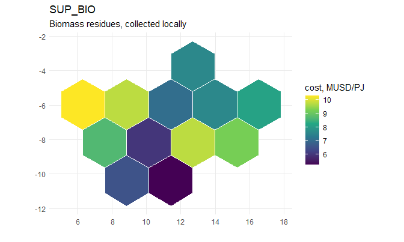
autoplot(SUP_BIO)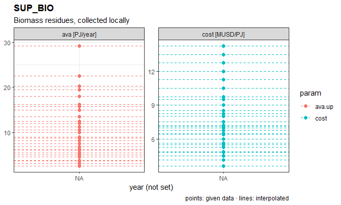
SUP_NUC <- newSupply(
name = "SUP_NUC",
desc = "Nuclear fuel assemblies",
units = data.frame(
activity = "PJ",
costs = "MUSD"
),
commodity = "NUC",
unit = "PJ",
region = "R04",
supply = data.frame(region = "R04", cost = 0.9)
)
autoplot(SUP_NUC, style = "map", map = gs)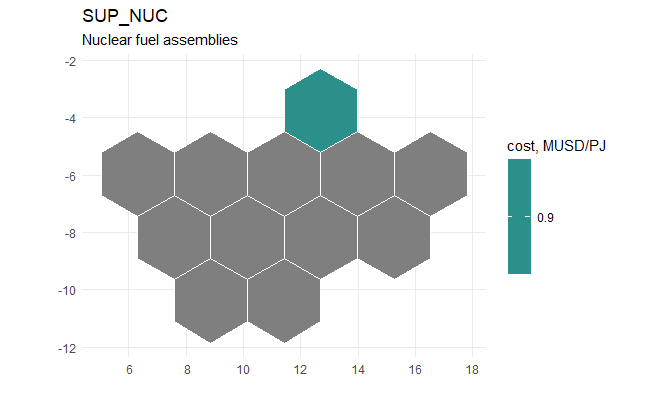
Hydro inflow is available in R05, the mountain
reservoir, and R07, the run-of-river valley, at zero cost.
Solar and wind draw no fuel, but both occupy land, and a land pool
replaces their former build limits. The pools are separate because the
terrain is: RES_LANDS is the open ground a photovoltaic
field can take, RES_LANDW the exposed terrain a wind farm
needs. Each region’s budget is the land its former cap would have
occupied, at 20 km2 per GW of solar and 100 per GW of wind.
# Potential, not weather. `topia$grades` carries, for every region and every
# resource grade, the capacity factor of the series and the number of weather
# cells standing behind it -- so the land a region can offer follows the
# geography that produced the series rather than a hand-written ceiling.
#
# The two resources take land differently. A wind farm leaves the ground in
# use and spreads thinly, so it is given a tenth of each cell and needs a lot
# of km2 per GW; a photovoltaic field takes the ground outright, so it gets a
# hundredth of each cell and needs little. The km2-per-GW figures differ by
# grade the way `EWIN`'s own land intensity does: an exposed ridge is spaced
# wider than open inland terrain, so it buys its yield with land.
WIND_KM2_PER_CELL <- 10
SOL_KM2_PER_CELL <- 1
WIND_KM2_PER_GW <- c(HI = 120, MD = 95, LO = 70) # as `EWIN`'s aeff
SOL_KM2_PER_GW <- 20
grades <- as.data.frame(topia$grades) |>
filter(region %in% regions)
land_w <- grades |>
filter(resource == "WWIN") |>
transmute(region, cluster,
ava.up = round(avail * WIND_KM2_PER_CELL, 1))
land_s <- grades |>
filter(resource == "WSOL", cluster == "FL") |>
transmute(region, ava.up = round(avail * SOL_KM2_PER_CELL, 1))
# what that land is worth in GW, which is the number to sanity-check
siting <- land_w |>
mutate(GW = round(ava.up / WIND_KM2_PER_GW[cluster], 1)) |>
select(region, cluster, km2 = ava.up, GW) |>
arrange(region, cluster)
knitr::kable(
siting,
caption = "Wind land by region and grade, and the capacity it supports (GW)"
)| region | cluster | km2 | GW |
|---|---|---|---|
| R01 | HI | 200 | 1.7 |
| R01 | MD | 130 | 1.4 |
| R02 | LO | 1250 | 17.9 |
| R02 | MD | 90 | 0.9 |
| R03 | LO | 2080 | 29.7 |
| R04 | LO | 2550 | 36.4 |
| R05 | LO | 1710 | 24.4 |
| R06 | LO | 1250 | 17.9 |
| R07 | LO | 1760 | 25.1 |
| R08 | LO | 1710 | 24.4 |
| R09 | HI | 200 | 1.7 |
| R09 | LO | 1460 | 20.9 |
| R10 | HI | 480 | 4.0 |
| R11 | HI | 400 | 3.3 |
| R11 | MD | 880 | 9.3 |
| R12 | HI | 290 | 2.4 |
| R12 | MD | 620 | 6.5 |
A region appears only in the grades its own cells reach: the island
and the north coast have no inland tier at all, the becalmed interior
has nothing but inland terrain, and only the exposed coast carries
HI. That is the whole point of grading the land rather than
the turbine – where a region may build is decided before any cost is
compared.
# A cluster carries a `region` column: the grade exists THERE and nowhere
# else. Without it every region would declare all three grades, and the
# two-thirds that have no such ground would reference a wind series that does
# not exist -- which is an error at interpolation, not a silent zero.
win_cl <- tibble::tribble(
~cluster, ~desc, ~order,
"HI", "exposed coast and ridge", 1,
"MD", "open country", 2,
"LO", "inland terrain", 3
) |>
inner_join(distinct(land_w, cluster, region), by = "cluster") |>
select(cluster, desc, region, order)
sol_cl <- tibble::tribble(
~cluster, ~desc, ~order,
"FL", "fixed tilt", 1,
"TH", "horizontal single-axis track", 2
) |>
inner_join(
grades |> filter(resource == "WSOL") |> distinct(cluster, region),
by = "cluster"
) |>
select(cluster, desc, region, order)
knitr::kable(
win_cl |> count(cluster, name = "regions"),
caption = "Regions offering each wind grade"
)| cluster | regions |
|---|---|
| HI | 5 |
| LO | 8 |
| MD | 4 |
RES_LANDS <- newSupply(
name = "RES_LANDS",
desc = "Land suitable for solar siting",
units = data.frame(
activity = "km2",
costs = "MUSD"
),
commodity = "LANDS",
unit = "km2",
region = regions,
supply = land_s
)
autoplot(RES_LANDS, style = "map", map = gs)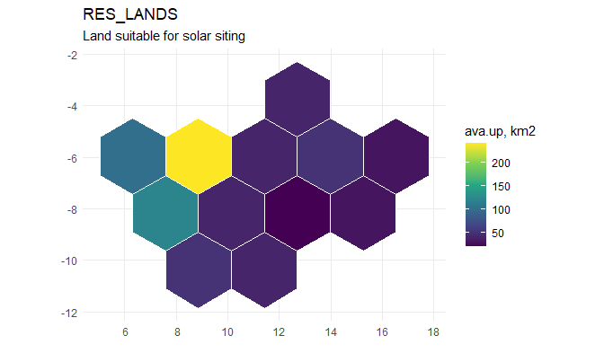
RES_LANDW <- newSupply(
name = "RES_LANDW",
desc = "Land suitable for wind siting",
units = data.frame(
activity = "km2",
costs = "MUSD"
),
commodity = "LANDW",
unit = "km2",
region = regions,
cluster = win_cl,
# only the grades a region actually reaches: a tier it has no cells for is
# absent rather than zero, so nothing is declared where it cannot be built
supply = land_w
)
autoplot(RES_LANDW, style = "map", map = gs)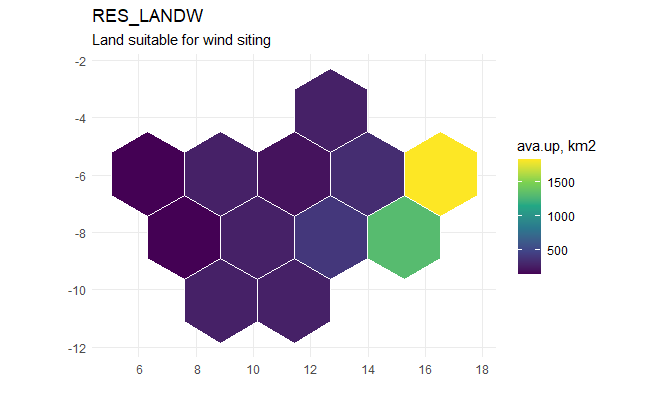
RES_HYD <- newSupply(
name = "RES_HYD",
desc = "River inflow to the reservoirs",
units = data.frame(
activity = "GWh",
costs = "MUSD"
),
commodity = "HYD",
unit = "GWh",
region = c("R05", "R07"),
supply = data.frame(
region = c("R05", "R07"),
cost = 0
)
)
autoplot(RES_HYD, style = "map", map = gs)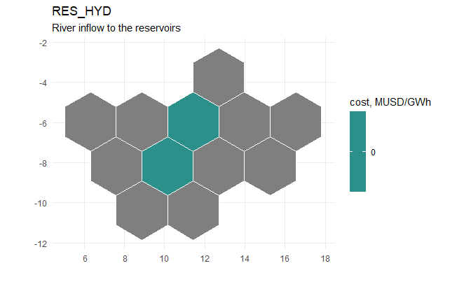
Rest-of-world trade
Coal and gas can be imported without a quantity limit in each zone at 3.5 and 9.0 MUSD/PJ, respectively. Hydrogen can be sold outward from any region at 0.09 MUSD/GWh, capped at 38 GWh per region in each timeslice: the demand that makes electrolysis worth building.
IMP_COA <- newImport(
name = "IMP_COA",
desc = "Coal import from the rest of the world",
commodity = "COA",
unit = "PJ",
region = zones,
import = data.frame(
region = zones,
price = 3.5
)
)
autoplot(IMP_COA, style = "map", map = gs)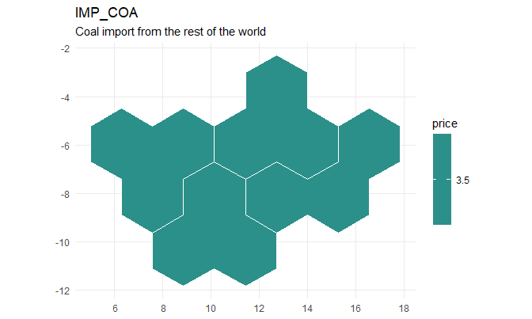
IMP_GAS <- newImport(
name = "IMP_GAS",
desc = "LNG import from the rest of the world",
commodity = "GAS",
unit = "PJ",
region = zones,
import = data.frame(
region = zones,
price = 9.0
)
)
autoplot(IMP_GAS, style = "map", map = gs)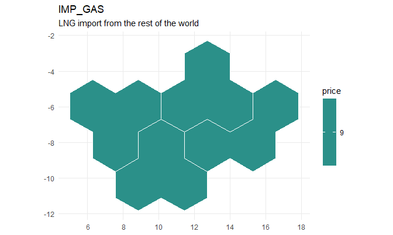
EXP_H2 <- newExport(
name = "EXP_H2",
desc = "Hydrogen export to the rest of the world",
commodity = "H2",
unit = "GWh",
region = regions,
export = data.frame(
region = regions,
price = 0.09,
exp.up = 38
)
)
autoplot(EXP_H2, style = "map", map = gs)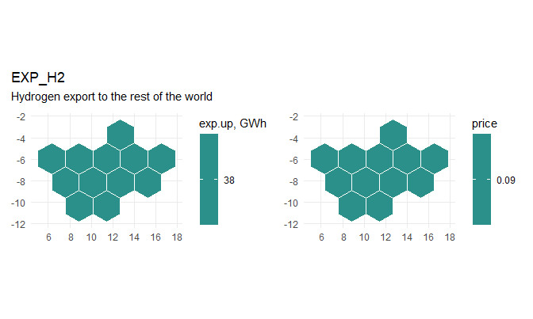
repo_supply <- newRepository(
name = "topia_supply",
SUP_COA, SUP_GAS, SUP_BIO, SUP_NUC,
RES_LANDS, RES_LANDW, RES_HYD,
IMP_COA, IMP_GAS
)Weather
WSOL, WWIN, and WHYD contain
hourly capacity factors by region and timeslice for solar, wind, and
hydro.
# The grades are MEASURED, not derived. Each series is the mean of the
# weather cells whose own annual capacity factor falls in that band, so the
# grades differ in shape as well as in level -- a scaled copy of one series
# would leave them correlated at 1.000, and the model would then see no reason
# to hold more than one.
#
# A region carries only the grades its own ground reaches: the island and the
# north coast have no inland tier, and the becalmed interior has nothing else.
wwin <- prof$weather |>
filter(resource == "WWIN") |>
select(region, cluster, timeslice, wval)
# Solar is graded by MOUNTING rather than by site: within a territory the best
# and the median cell differ by a few per cent, while single-axis tracking on
# the same ground is worth about a fifth more energy and moves the peak into
# the morning. Tracking is offered only where the resource repays it.
wsol <- prof$weather |>
filter(resource == "WSOL") |>
select(region, cluster, timeslice, wval)
whyd <- prof$weather |>
filter(resource == "WHYD") |>
select(region, timeslice, wval)
WSOL <- newWeather(
name = "WSOL",
desc = "Solar capacity factor by timeslice, region and mounting",
timeframe = "HOUR",
cluster = sol_cl,
weather = wsol
)
# autoplot(WSOL, region = "R02")
WWIN <- newWeather(
name = "WWIN",
desc = "Wind capacity factor by timeslice, region and site grade",
timeframe = "HOUR",
cluster = win_cl,
weather = wwin
)
WHYD <- newWeather(
name = "WHYD",
desc = "Hydro inflow factor by timeslice and region",
timeframe = "HOUR",
weather = whyd
)
repo_weather <- newRepository(
name = "topia_weather",
WSOL, WWIN, WHYD
)Solar capacity factors decline from west to east. Wind profiles interpolate from weaker daytime wind in the west to stronger nocturnal, winter-peaking wind in the east.
cf_summary <- prof$weather |>
filter(resource %in% c("WSOL", "WWIN")) |>
summarise(cf = mean(wval), .by = c(resource, region)) |>
tidyr::pivot_wider(names_from = resource, values_from = cf) |>
arrange(match(region, regions))
knitr::kable(cf_summary, digits = 3, caption = "Annual mean capacity factor by region")| region | WSOL | WWIN |
|---|---|---|
| R01 | 0.105 | 0.488 |
| R02 | 0.198 | 0.305 |
| R03 | 0.213 | 0.215 |
| R04 | 0.156 | 0.210 |
| R05 | 0.192 | 0.095 |
| R06 | 0.181 | 0.213 |
| R07 | 0.185 | 0.122 |
| R08 | 0.183 | 0.166 |
| R09 | 0.125 | 0.408 |
| R10 | 0.123 | 0.544 |
| R11 | 0.116 | 0.512 |
| R12 | 0.120 | 0.496 |
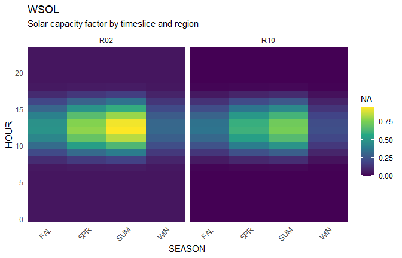
Demand
DEM_ELC defines hourly electricity demand for twelve
regions and four milestone years. The arid west peaks in the evening;
the firm and industrial north-east is flatter. R11 is the
load centre and R06 the industrial one, between them a
third of the system’s demand; R01, the island, is the
smallest, and R10, where the wind is, is land-rich and
lightly loaded.
levels <- tibble::tribble(
~region, ~annual_GWh,
"R01", 10000,
"R02", 18000,
"R03", 20000,
"R04", 32000,
"R05", 28000,
"R06", 46000,
"R07", 26000,
"R08", 32000,
"R09", 24000,
"R10", 16000,
"R11", 48000,
"R12", 22000
)
knitr::kable(
levels,
caption = "Annual electricity demand in 2025, GWh"
)| region | annual_GWh |
|---|---|
| R01 | 10000 |
| R02 | 18000 |
| R03 | 20000 |
| R04 | 32000 |
| R05 | 28000 |
| R06 | 46000 |
| R07 | 26000 |
| R08 | 32000 |
| R09 | 24000 |
| R10 | 16000 |
| R11 | 48000 |
| R12 | 22000 |
Each regional profile is normalized and scaled to its annual demand level in the base year. The model ships that year and nothing else; the next section grows it.
tsl_share <- calendar@timeslice_share |>
as.data.frame() |>
select(timeslice, share)
shape <- prof$demand |>
left_join(tsl_share, by = "timeslice") |>
mutate(w = load * share) |>
mutate(w = w / sum(w), .by = region)
# The BASE YEAR alone. One hourly year of demand for twelve regions is
# already 105,120 numbers; carrying a milestone path would multiply that by
# the number of milestones for no new information, since every later year is
# this shape times a scalar. The projection is built below, in three lines,
# and that is the part worth reading anyway.
dem_elc <- shape |>
left_join(levels, by = "region") |>
mutate(year = 2025, demand = annual_GWh * w) |>
select(region, year, timeslice, demand)
DEM_ELC <- newDemand(
name = "DEM_ELC",
desc = "Electricity demand",
commodity = "ELC",
unit = "GWh",
demand = dem_elc
)
repo_demand <- newRepository(
name = "topia_demand",
DEM_ELC
)Growing it into a projection
The shipped demand stops at the base year, so the model as it stands
holds 2025 demand in every milestone: pDemand is
interpolated back.inter.forth, and with a single anchor
there is nothing to interpolate between, so the value is carried
forward.
A projection is the base year times a path. Declaring the two ends is enough whenever the path is a straight line – the rule fills what lies between, so 1.1 in 2030 and 1.3 in 2040 come out of a table that never mentions them:
growth <- tibble::tribble(
~year, ~factor,
2025, 1.0,
2050, 1.5
)
DEM_ELC_GROWN <- update(
DEM_ELC,
demand = dem_elc |>
select(-year) |>
tidyr::crossing(growth) |>
mutate(demand = demand * factor) |>
select(region, year, timeslice, demand)
)
# swap it in wherever a projection is wanted, leaving the shipped object alone
# mod <- add(mod, DEM_ELC_GROWN, overwrite = TRUE)
range(DEM_ELC_GROWN@demand$year)
#> [1] 2025 2050A path with a bend needs its corners declared and nothing else: anchor the years where the slope changes and let the rule draw the straight pieces. What never needs declaring is the hourly shape, which is the part that costs 105,120 numbers a year.
The projected demand, interpolated across years, can be displayed as
an "area" plot of the annual totals stacked by region over
every year between the first and last milestone. The bands are
interpolated, the points are the milestone years as given, drawn on the
edge of their own band.
autoplot(DEM_ELC, style = "area")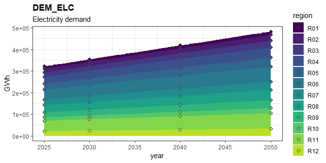
Sub-annual profiles can be displayed by changing the style to
"line" or "heatmap", filtered by region and
year.
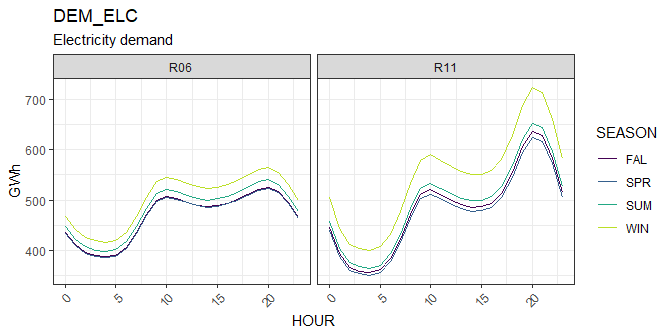
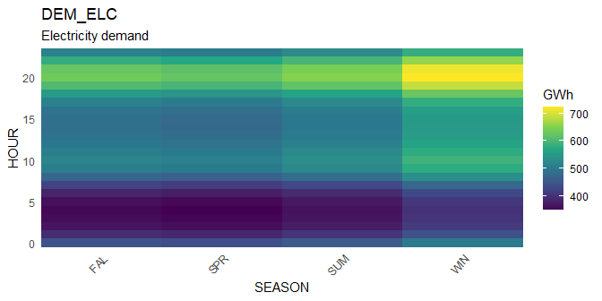
Technologies
The model includes seven electricity-generation technologies.
cap2act converts GW of capacity to annual GWh; fuel-based
technologies also convert PJ of input to GWh of output.
Coal
ECOA is a 35%-efficient subcritical coal plant. The
fleet sits on the lignite basin – R08 has eight of its
gigawatts and neighbouring R09 four, against one apiece
elsewhere – which is what gives the coal corridors a direction to carry.
It declines to 30% of 2025 capacity by 2050, may retire early, and
cannot be built after 2030.
# Capacity fleat: (arbitrary) assignment by region
coal_fleet <- tibble::tribble(
~region, ~GW,
"R01", 1,
"R02", 1,
"R03", 1,
"R04", 1,
"R05", 1,
"R06", 3,
"R07", 1,
"R08", 8,
"R09", 4,
"R10", 1,
"R11", 1,
"R12", 1
)
# Explicit retirement of existing capacity is set by defining the stock by year
coal_cap <- bind_rows(
coal_fleet |> mutate(year = 2025, stock = GW),
coal_fleet |> mutate(year = 2050, stock = GW * 0.3)
) |>
select(region, year, stock)
# Technological process is defined for each type of technology with unique name
ECOA <- newTechnology(
name = "ECOA",
desc = "Coal-fired power plant, subcritical",
units = data.frame(
capacity = "GW",
activity = "GWh",
costs = "MUSD"
),
input = list(
comm = "COA",
unit = "PJ",
combustion = 1
),
output = list(
comm = "ELC",
unit = "GWh"
),
ceff = data.frame(
comm = c("COA", "ELC"),
cinp2use = c(0.40, NA), # 40% conversion efficiency
use2cact = c(NA, convert("PJ", "GWh", 1)) # the PJ -> GWh bridge
),
cap2act = convert("GW*year", "GWh", 1),
invcost = data.frame(
invcost = convert("USD/kW", "MUSD/GW", 2000),
retcost = convert("USD/kW", "MUSD/GW", 25) # paid on early retirement only
),
fixom = 55,
vintage = data.frame(
start = 2010L,
end = 2030L, # no new coal after 2030
olife = 30L
),
optimizeRetirement = TRUE,
capacity = coal_cap
)
# A schematic view of the process with key parameters
draw(ECOA)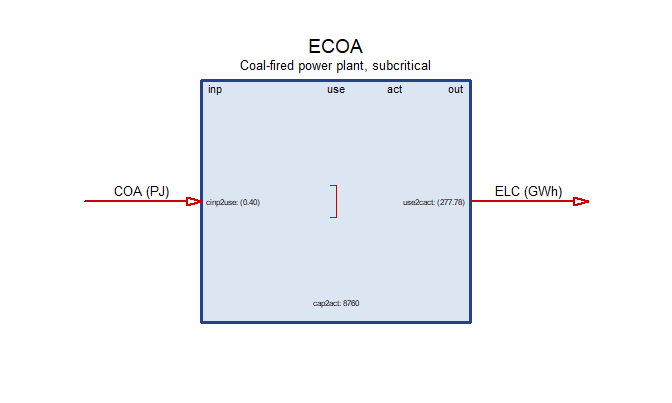
Gas
EGAS is a 58%-efficient combined-cycle gas plant. The
fleet follows the domestic gas: R03 sits on the field, and
R01 – which has no wire and must convert its imported fuel
itself – carries four gigawatts of it. The fleet declines to 60% of 2025
capacity by 2050, may retire early, and remains available for new
construction throughout the horizon.
# Gas sits where the gas is, plus a peaker at the load centre. The base-year
# solve is what sized this: a plant that runs no hour in 2025 is not a fleet,
# it is an assumption, so the regions whose gas never started -- the lignite
# basin, the forestry belt and the run-of-river valley, which have coal, hydro
# and imports -- carry none. `R06` and `R11` were raised after a base-year run
# on the full hourly year built peaking gas there: the twelve-day sample the
# sizing began from does not contain the hours that call for it.
gas_fleet <- tibble::tribble(
~region, ~GW,
"R01", 4,
"R02", 2,
"R03", 6,
"R04", 1,
"R05", 1,
"R06", 2,
"R11", 1.5,
"R12", 1
)
gas_cap <- bind_rows(
gas_fleet |> mutate(year = 2025, stock = GW),
gas_fleet |> mutate(year = 2050, stock = GW * 0.6)
) |>
select(region, year, stock)
EGAS <- newTechnology(
name = "EGAS",
desc = "Gas-fired combined-cycle plant",
units = data.frame(
capacity = "GW",
activity = "GWh",
costs = "MUSD"
),
input = list(
comm = "GAS",
unit = "PJ",
combustion = 1),
output = list(
comm = "ELC",
unit = "GWh"),
ceff = data.frame(
comm = c("GAS", "ELC"),
cinp2use = c(0.58, NA),
use2cact = c(NA, convert("PJ", "GWh", 1))
),
cap2act = convert("GW*year", "GWh", 1),
invcost = list(
invcost = convert("USD/kW", "MUSD/GW", 900)
),
fixom = 25,
vintage = data.frame(
start = 2010L,
olife = 30L
),
optimizeRetirement = TRUE,
capacity = gas_cap
)Nuclear
ENUC is a 4 GW station in R04, the region
that inherited the fleet, with 35% conversion efficiency, a 70% minimum
availability factor, a 50-year life, and new builds allowed from
2030.
ENUC <- newTechnology(
name = "ENUC",
desc = "Nuclear power plant",
units = data.frame(
capacity = "GW",
activity = "GWh",
costs = "MUSD"
),
region = "R04",
input = list(comm = "NUC", unit = "PJ"),
output = list(comm = "ELC", unit = "GWh"),
ceff = data.frame(
comm = c("NUC", "ELC"),
cinp2use = c(0.35, NA),
use2cact = c(NA, convert("PJ", "GWh", 1))
),
af = data.frame(
af.lo = 0.7 # lower bound on hourly generation (must work)
),
cap2act = convert("GW*year", "GWh", 1),
invcost = data.frame(
invcost = convert("USD/kW", "MUSD/GW", 8000)
),
fixom = 120,
vintage = data.frame(
start = 2030L,
olife = 50L
),
capacity = data.frame(
region = "R04",
year = c(2025, 2050),
stock = c(4, 4)
)
)
draw(ENUC)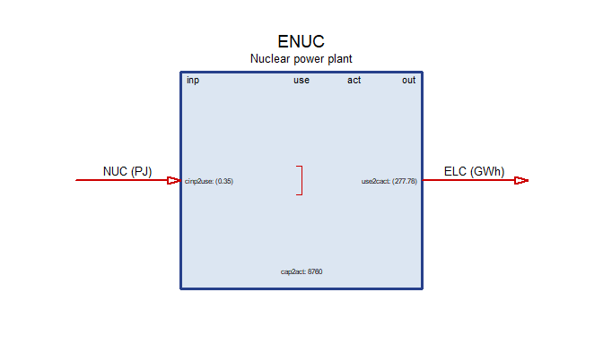
Solar and wind
ESOL and EWIN have no fuel: the hourly
weather profile bounds their output directly, and their land pool bounds
how much may be built. Each region starts with 1 GW of legacy solar and
wind capacity, declining to zero by 2050.
EWIN carries two site grades as clusters, and the grades
reach through every object the wind chain touches. WWIN
holds a profile per grade: HI is the exposed ridge and
coast as measured, LO the open inland terrain, weaker and
steadier. LANDW is declared in the same two tiers, so the
commodity becomes one balance per grade and ridgeline cannot be spent on
an inland farm; RES_LANDW gives each tier its own budget,
the exposed land being the scarce one. EWIN then carries
its own cost and land intensity per grade, and a reference to
WWIN or LANDW resolves to the matching tier by
cluster name.
The grades are not simply better and worse. HI yields
more energy per GW and occupies more land per GW, and its land is the
scarce kind; LO is weaker but plentiful. Which one a region
builds is a question about its terrain.
# Everything standing in 2025 is fixed tilt: tracking is new in this horizon
# and has no legacy fleet.
sol_cap <- data.frame(
vintage = "2015",
cluster = "FL",
region = rep(regions, times = 2),
year = rep(c(2025, 2050), each = length(regions)),
stock = rep(c(1, 0), each = length(regions))
)
ESOL <- newTechnology(
name = "ESOL",
desc = "Solar photovoltaic plant",
units = data.frame(
capacity = "GW",
activity = "GWh",
costs = "MUSD"
),
output = list(
comm = "ELC",
unit = "GWh"
),
weather = list(
weather = "WSOL",
waf.up = 1
),
cap2act = convert("GW*year", "GWh", 1),
vintage = data.frame(
vintage = c("2015", "2030", "2045"),
start = c(2015L, 2030L, 2045L),
# The legacy vintage closes to investment BEFORE the base year: 2025 is
# observed, so what stands in it is stock and not a decision. Left open to
# 2025 the base-year solve bought legacy turbines at legacy prices, up to
# the land ceiling.
end = c(2020L, 2040L, 2050L),
olife = c(25L, 30L, 30L)
),
# Two mountings on the same ground. Tracking earns about a fifth more
# energy from the same cells and moves the peak into the morning, and pays
# for it in capital and in land: the rows must not shade one another, so a
# tracking field is spread wider.
cluster = sol_cl,
invcost = data.frame(
cluster = rep(c("FL", "TH"), each = 3),
vintage = rep(c("2015", "2030", "2045"), times = 2),
invcost = convert("USD/kW", "MUSD/GW",
c(650, 450, 350, 780, 540, 420))
),
fixom = data.frame(
cluster = rep(c("FL", "TH"), each = 3),
vintage = rep(c("2015", "2030", "2045"), times = 2),
fixom = c(12, 10, 9, 15, 13, 11)
),
aux = data.frame(
acomm = "LANDS",
unit = "km2"
),
aeff = data.frame(
cluster = rep(c("FL", "TH"), each = 3),
vintage = rep(c("2015", "2030", "2045"), times = 2),
acomm = "LANDS",
cap2ainp = c(20, 16, 14, 28, 23, 20) # km2 of land per GW standing
),
capacity = sol_cap
)
draw(ESOL)
# A clustered technology cannot broadcast one stock across its clusters, so
# each grade is named. Every region inherits 1 GW of inland (`LO`) turbines;
# the three windy regions also inherit a fleet on the exposed ridges and coast,
# which is where turbines were actually built first.
#
# The `HI` fleet has to FIT: `HI` land is 30 km2 per GW of the region's wind
# siting budget and an `HI` farm takes 120 km2 per GW, so the ceiling is a
# quarter of that budget -- 3.5 GW in `R10`, 2.5 in `R12`, 0.75 in `R11`. The
# inherited fleet is set below each ceiling so the later vintages have room to
# build; filling it would leave the exposed grade nowhere to grow.
# The 2025 fleet, by region and grade. What stands in the base year is
# observed, so it is stock rather than a decision, and it retires to nothing
# by 2050 -- the legacy vintage is closed to investment before 2025.
#
# The table is FILTERED to the grades a region actually has: declaring a
# turbine on a tier with no land and no wind series would reach the model as a
# plant that can never run.
win_stock <- tibble::tribble(
~region, ~cluster, ~stock,
"R10", "HI", 2.5,
"R11", "HI", 2.0,
"R12", "HI", 1.5,
"R09", "HI", 1.0,
"R01", "HI", 0.4,
"R11", "MD", 0.5,
"R12", "MD", 0.4,
"R02", "MD", 0.3,
"R01", "MD", 0.2,
"R03", "LO", 0.8,
"R04", "LO", 0.8,
"R06", "LO", 0.6,
"R08", "LO", 0.6,
"R07", "LO", 0.4,
"R09", "LO", 0.4,
"R05", "LO", 0.2,
"R02", "LO", 0.2
) |>
semi_join(land_w, by = c("region", "cluster"))
win_cap <- bind_rows(
win_stock |> mutate(vintage = "2015", year = 2025),
win_stock |> mutate(vintage = "2015", year = 2050, stock = 0)
) |>
select(vintage, cluster, region, year, stock)
knitr::kable(
win_stock |> tidyr::pivot_wider(names_from = cluster, values_from = stock),
caption = "Base-year wind fleet by grade, GW"
)| region | HI | MD | LO |
|---|---|---|---|
| R10 | 2.5 | NA | NA |
| R11 | 2.0 | 0.5 | NA |
| R12 | 1.5 | 0.4 | NA |
| R09 | 1.0 | NA | 0.4 |
| R01 | 0.4 | 0.2 | NA |
| R02 | NA | 0.3 | 0.2 |
| R03 | NA | NA | 0.8 |
| R04 | NA | NA | 0.8 |
| R06 | NA | NA | 0.6 |
| R08 | NA | NA | 0.6 |
| R07 | NA | NA | 0.4 |
| R05 | NA | NA | 0.2 |
EWIN <- newTechnology(
name = "EWIN",
desc = "Onshore wind farm",
units = data.frame(
capacity = "GW",
activity = "GWh",
costs = "MUSD"
),
output = list(comm = "ELC", unit = "GWh"),
weather = list(weather = "WWIN", waf.up = 1),
cap2act = convert("GW*year", "GWh", 1),
vintage = data.frame(
vintage = c("2015", "2030", "2045"),
start = c(2015L, 2030L, 2045L),
# The legacy vintage closes to investment BEFORE the base year: 2025 is
# observed, so what stands in it is stock and not a decision. Left open to
# 2025 the base-year solve bought legacy turbines at legacy prices, up to
# the land ceiling.
end = c(2020L, 2040L, 2050L),
olife = c(25L, 30L, 30L)
),
invcost = data.frame(
vintage = c("2015", "2030", "2045"),
invcost = convert("USD/kW", "MUSD/GW", c(1300, 1100, 950))
),
fixom = data.frame(
vintage = c("2015", "2030", "2045"),
fixom = c(35, 30, 28)
),
cluster = win_cl,
aux = data.frame(
acomm = "LANDW",
unit = "km2"
),
aeff = data.frame(
cluster = rep(c("HI", "MD", "LO"), each = 3),
vintage = rep(c("2015", "2030", "2045"), times = 3),
acomm = "LANDW",
# the windier grade needs wider spacing, so it buys its yield with land
cap2ainp = c(120, 114, 108, 95, 90, 86, 70, 66, 63)
),
capacity = win_cap
)
draw(EWIN)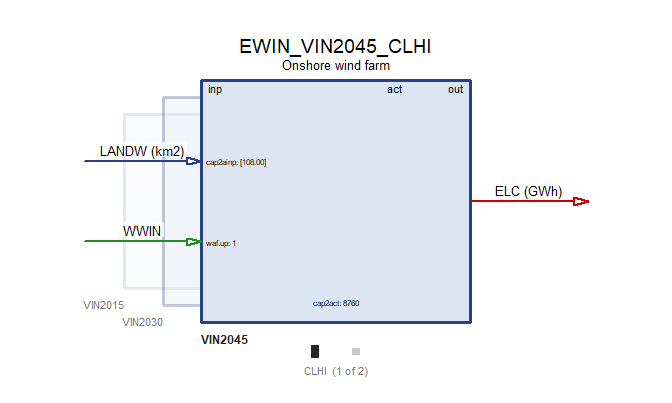
Hydro
EHYD represents fixed reservoir hydropower capacity: 12
GW at the mountain reservoir in R05 and 6 GW in the
run-of-river valley R07. The inherited plants have a
60-year life and cannot be expanded.
EHYD <- newTechnology(
name = "EHYD",
desc = "Reservoir hydropower plant",
units = data.frame(
capacity = "GW",
activity = "GWh",
costs = "MUSD"
),
region = c("R05", "R07"),
input = list(
comm = "HYD",
unit = "GWh"),
output = list(
comm = "ELC",
unit = "GWh"),
ceff = data.frame(
comm = "HYD",
cinp2use = 1),
weather = list(
weather = "WHYD",
comm = "HYD",
waf.up = 1),
cap2act = convert("GW*year", "GWh", 1),
invcost = list(
invcost = convert("USD/kW", "MUSD/GW", 3000)
),
fixom = 45,
vintage = data.frame(
start = 2010L,
end = 2010L,
olife = 60L
),
capacity = data.frame(
region = rep(c("R05", "R07"), times = 2),
year = rep(c(2025, 2050), each = 2),
stock = rep(c(12, 6), times = 2)
)
)
autoplot(EHYD, map = gs, style = "map")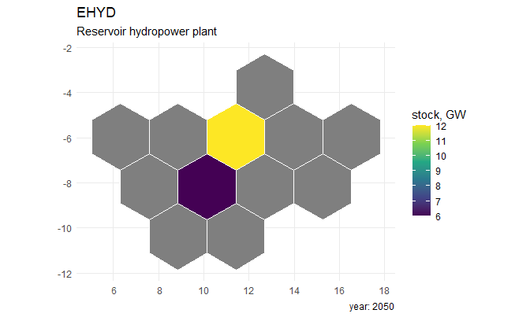
Biomass
EBIO is a dispatchable, carbon-neutral biomass plant
available for new builds from 2030.
EBIO <- newTechnology(
name = "EBIO",
desc = "Biomass power plant, carbon-neutral",
units = data.frame(
capacity = "GW",
activity = "GWh",
costs = "MUSD"
),
input = list(
comm = "BIO",
unit = "PJ",
combustion = 1
),
output = list(
comm = "ELC",
unit = "GWh"),
ceff = data.frame(
comm = c("BIO", "ELC"),
cinp2use = c(0.35, NA),
use2cact = c(NA, convert("PJ", "GWh", 1))
),
cap2act = convert("GW*year", "GWh", 1),
invcost = list(invcost = convert("USD/kW", "MUSD/GW", 1600)),
fixom = 60,
vintage = data.frame(
start = 2030L,
olife = 30L
),
optimizeRetirement = TRUE
)
draw(EBIO)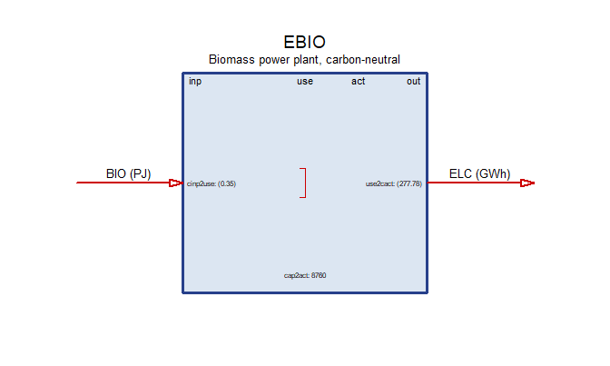
repo_generators <- newRepository(
name = "topia_generators",
ECOA, EGAS, ENUC, ESOL, EWIN, EHYD, EBIO
)
summary(repo_generators)
#> technology
#> 7Hydrogen
H2ELC is an electrolyser: it consumes electricity and
produces hydrogen. Three vintages become available from 2030, each
cheaper and more efficient than the last. Having an hourly electricity
input and an hourly hydrogen output, it can absorb surplus wind and
solar in the hours when they are abundant, which is what makes
STG_H2 and EXP_H2 below worth building.
H2ELC <- newTechnology(
name = "H2ELC",
desc = "Water electrolyser, grid-connected",
units = data.frame(
capacity = "GW",
activity = "GWh",
costs = "MUSD"
),
input = list(
comm = "ELC",
unit = "GWh"
),
output = list(
comm = "H2",
unit = "GWh"
),
ceff = data.frame(
vintage = c("2030", "2040", "2050"),
comm = "ELC",
cinp2use = c(0.65, 0.70, 0.74) # GWh of H2 per GWh of electricity
),
cap2act = convert("GW*year", "GWh", 1),
vintage = data.frame(
vintage = c("2030", "2040", "2050"),
start = c(2030L, 2040L, 2050L),
end = 2050L,
olife = 25L
),
invcost = data.frame(
vintage = c("2030", "2040", "2050"),
invcost = convert("USD/kW", "MUSD/GW", c(1400, 1000, 800))
),
fixom = data.frame(
vintage = c("2030", "2040", "2050"),
fixom = c(40, 34, 30)
)
)
draw(H2ELC)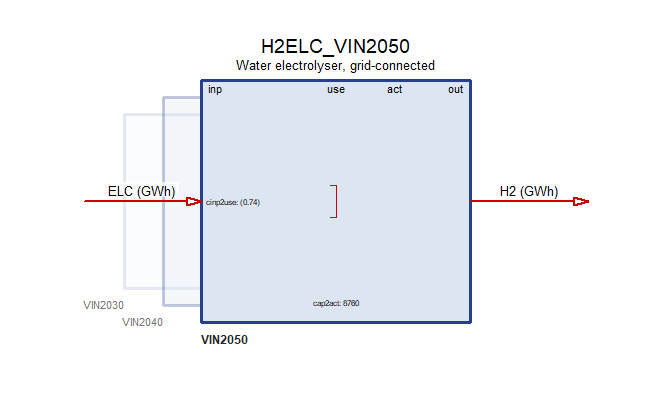
Storage
STG_ELC is a four-hour lithium-ion battery with 95%
input and output efficiencies. stg.invcost prices energy
capacity in MUSD/GWh; out.invcost prices discharge power in
MUSD/GW. Three vintages become available over the horizon, each cheaper
than the last.
STG_ELC <- newStorage(
name = "STG_ELC",
desc = "Lithium-ion battery, four-hour reservoir",
units = data.frame(
capacity = "GW",
activity = "GWh",
costs = "MUSD"
),
commodity = "ELC",
cap2act = convert("GW*year", "GWh", 1),
duration = 4, # GWh per GW = hours
vintage = data.frame(
vintage = c("2025", "2035", "2045"),
start = c(2025L, 2035L, 2045L),
end = c(2030L, 2040L, 2050L),
olife = c(20L, 20L, 25L)
),
invcost = data.frame(
vintage = c("2025", "2035", "2045"),
stg.invcost = convert("USD/kWh", "MUSD/GWh", c(200, 110, 70)),
out.invcost = convert("USD/kW", "MUSD/GW", c(150, 120, 95))
),
seff = data.frame(inpeff = 0.95, outeff = 0.95),
# The windy east already stores: a base-year run on the full hourly year
# builds 1.9 GW in `R11` and 1.0 GW in `R12` from nothing, which says the
# fleet standing in 2025 includes batteries there and the kit was not
# declaring them. Both halves are declared -- the power rating AND the
# reservoir, four hours of it, because `duration` is a constraint between
# two stocks and not a way to derive one from the other: a declared power
# rating with no reservoir behind it makes the base year build the
# reservoir instead. It halves by 2050, so the projection replaces the
# fleet rather than inheriting it forever.
capacity = data.frame(
vintage = "2025",
region = rep(c("R11", "R12"), times = 2),
year = rep(c(2025, 2050), each = 2),
out.stock = c(2.0, 1.10, 1.0, 0.55),
stg.stock = c(8.0, 4.40, 4.0, 2.20)
)
)
draw(STG_ELC)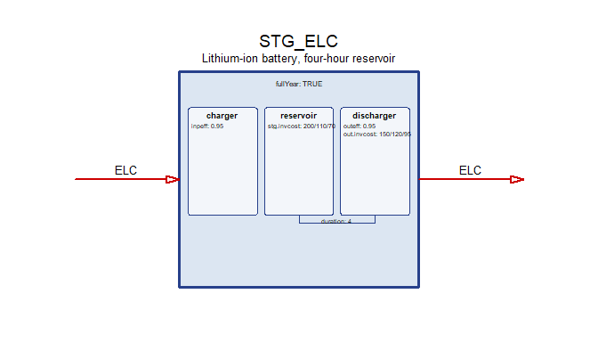
STG_H2 <- newStorage(
name = "STG_H2",
desc = "Hydrogen store, two hundred hours",
units = data.frame(
capacity = "GW",
activity = "GWh",
costs = "MUSD"
),
commodity = "H2",
cap2act = convert("GW*year", "GWh", 1),
duration = 200, # GWh per GW = hours
vintage = data.frame(olife = 30L),
invcost = data.frame(
stg.invcost = convert("USD/kWh", "MUSD/GWh", 2),
out.invcost = convert("USD/kW", "MUSD/GW", 400)
),
seff = data.frame(inpeff = 0.98, outeff = 0.98)
)
draw(STG_H2)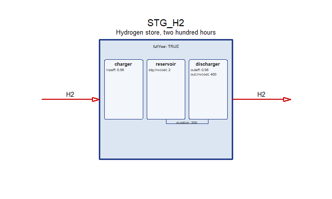
repo_storage <- newRepository(
name = "topia_storage",
STG_ELC
)
# the hydrogen chain is declared across three sections: the electrolyser with
# the technologies, the store here, the export with the rest-of-world trade
repo_hydrogen <- newRepository(
name = "topia_hydrogen",
H2ELC, STG_H2, EXP_H2
)Inter-regional trade
topia$links is the transmission network, a symmetric
region-by-region matrix settled with the geometry: two regions are
linked when they share a border on most of the four layouts, and a link
never crosses another on the map it was taken from. R01 is
the exception that is not an exception – it has no link at all. It is
the remote region, and a model in which it balances locally is the point
of it rather than an oversight.
links <- topia$links[regions, regions]
knitr::kable(
ifelse(links, "x", ""),
caption = "Transmission network: a cross marks a linked pair"
)| R01 | R02 | R03 | R04 | R05 | R06 | R07 | R08 | R09 | R10 | R11 | R12 | |
|---|---|---|---|---|---|---|---|---|---|---|---|---|
| R01 | ||||||||||||
| R02 | x | x | x | |||||||||
| R03 | x | x | ||||||||||
| R04 | x | x | ||||||||||
| R05 | x | x | x | x | ||||||||
| R06 | x | x | x | |||||||||
| R07 | x | x | x | x | ||||||||
| R08 | x | x | ||||||||||
| R09 | x | x | ||||||||||
| R10 | x | x | x | |||||||||
| R11 | x | x | ||||||||||
| R12 | x |
Each linked pair becomes one bidirectional corridor carrying
ELC, with 97% transfer efficiency, 350 MUSD/GW investment
cost and a 2 USD/MWh wheeling cost. cap2act converts
corridor capacity from GW to GWh. The upper triangle is enough: a pair
is one object, declared in both directions inside it.
Existing capacity is 3 GW on most corridors and 8 GW where
both endpoints carry the HI wind grade.
The windy east is meshed more strongly than the rest because that is
where the wind is: a grid gets built out to collect it. The rule is read
off the resource data rather than listed by hand, so it follows the
grades wherever a rebuild puts them. Its practical effect is that the
base year installs nothing – at a flat 3 GW the 2025 run buys 3.1 GW of
extra wire between the two windiest regions, which would make the base
year a forecast rather than an observation of a fleet that exists.
pairs <- which(links & upper.tri(links), arr.ind = TRUE)
hi_wind <- unique(as.character(
win_cl$region[win_cl$cluster == "HI"]
))
elc_stock <- function(a, b) if (all(c(a, b) %in% hi_wind)) 8 else 3
repo_transmission <- newRepository("topia_transmission")
for (i in seq_len(nrow(pairs))) {
a <- regions[pairs[i, 1]]
b <- regions[pairs[i, 2]]
trd <- newTrade(
name = paste0("TBD_ELC_", a, "_", b),
desc = paste0("Bidirectional transmission line ", a, " - ", b),
units = data.frame(
capacity = "GW",
activity = "GWh",
costs = "MUSD"
),
commodity = "ELC",
routes = data.frame(
src = c(a, b),
dst = c(b, a)
),
trade = data.frame(
src = c(a, b),
dst = c(b, a),
teff = 0.97
),
cap2act = convert("GW*year", "GWh", 1),
capacity = data.frame(stock = elc_stock(a, b)),
invcost = data.frame(
region = c(a, b),
invcost = 350
),
varom = data.frame(
src = c(a, b),
dst = c(b, a),
varom = convert("USD/MWh", "MUSD/GWh", 2)
),
vintage = data.frame(olife = 50L)
)
repo_transmission <- add(repo_transmission, trd)
}
names(repo_transmission)
#> [1] "TBD_ELC_R02_R03" "TBD_ELC_R02_R05" "TBD_ELC_R04_R05" "TBD_ELC_R04_R06"
#> [5] "TBD_ELC_R05_R06" "TBD_ELC_R02_R07" "TBD_ELC_R03_R07" "TBD_ELC_R05_R07"
#> [9] "TBD_ELC_R07_R08" "TBD_ELC_R08_R09" "TBD_ELC_R06_R10" "TBD_ELC_R09_R10"
#> [13] "TBD_ELC_R10_R11" "TBD_ELC_R11_R12"Fuel corridors
Coal rail corridors and gas pipelines connect adjacent zones. They
are written out rather than looped because they live at a different
geoframe: COA and GAS are balanced per zone,
so their corridors run zone to zone and are not in the region
matrix.
The two fuels move differently, which is the point of separating
them. Coal leaves the basin in Z4 on two
corridors, to Z3 and to Z5, and runs in
both directions on each, so a surplus can travel either
way. Gas has one pipe and it runs one
way, Z2 to Z3: a pipeline is built to
deliver from a field to a market, and declaring a single
routes row is how that is said – the model then cannot send
gas back, whatever the prices do. Neither fuel reaches Z1
at all: the remote zone buys from the rest of the world instead, which
is what the import objects are for. Coal corridors carry 60 PJ/year at
99% efficiency, the gas pipe 40 PJ/year at 98%. Their capacity unit is
PJ/year, so cap2act = 1.
TBD_COA_Z4_Z3 <- newTrade(
name = "TBD_COA_Z4_Z3",
desc = "Coal rail corridor Z4 - Z3",
units = data.frame(
capacity = "PJ/year",
activity = "PJ",
costs = "MUSD"
),
commodity = "COA",
routes = data.frame(
src = c("Z4", "Z3"),
dst = c("Z3", "Z4")
),
trade = data.frame(
src = c("Z4", "Z3"),
dst = c("Z3", "Z4"),
teff = 0.99
),
cap2act = 1, # capacity in PJ/yr
capacity = data.frame(stock = 60),
invcost = data.frame(
region = c("Z4", "Z3"),
invcost = 20
),
varom = data.frame(
src = c("Z4", "Z3"),
dst = c("Z3", "Z4"),
varom = 0.3
),
vintage = data.frame(olife = 40L)
)
TBD_COA_Z4_Z5 <- newTrade(
name = "TBD_COA_Z4_Z5",
desc = "Coal rail corridor Z4 - Z5",
units = data.frame(
capacity = "PJ/year",
activity = "PJ",
costs = "MUSD"
),
commodity = "COA",
routes = data.frame(
src = c("Z4", "Z5"),
dst = c("Z5", "Z4")
),
trade = data.frame(
src = c("Z4", "Z5"),
dst = c("Z5", "Z4"),
teff = 0.99
),
cap2act = 1,
capacity = data.frame(stock = 60),
invcost = data.frame(
region = c("Z4", "Z5"),
invcost = 20
),
varom = data.frame(
src = c("Z4", "Z5"),
dst = c("Z5", "Z4"),
varom = 0.3
),
vintage = data.frame(olife = 40L)
)
TBD_GAS_Z2_Z3 <- newTrade(
name = "TBD_GAS_Z2_Z3",
desc = "Gas pipeline Z2 - Z3, one way",
units = data.frame(
capacity = "PJ/year",
activity = "PJ",
costs = "MUSD"
),
commodity = "GAS",
# one row, so the pipe runs one way only: gas leaves the producing zone
routes = data.frame(
src = "Z2",
dst = "Z3"
),
trade = data.frame(
src = "Z2",
dst = "Z3",
teff = 0.98
),
cap2act = 1,
capacity = data.frame(stock = 40),
invcost = data.frame(
region = c("Z2", "Z3"),
invcost = 60
),
varom = data.frame(
src = "Z2",
dst = "Z3",
varom = 0.2
),
vintage = data.frame(olife = 40L)
)
repo_fuel_trade <- newRepository(
name = "topia_fuel_trade",
TBD_COA_Z4_Z3, TBD_COA_Z4_Z5,
TBD_GAS_Z2_Z3
)
names(repo_fuel_trade)
#> [1] "TBD_COA_Z4_Z3" "TBD_COA_Z4_Z5" "TBD_GAS_Z2_Z3"Drawing the network
Four ready-made views of the same repository.
plot_trade_map() draws straight arrows between region
centroids; plot_trade_network() curves the edges and scales
them by capacity, which separates the links that are not borders on this
particular layout.
plot_trade_map(repo_transmission, map = gs)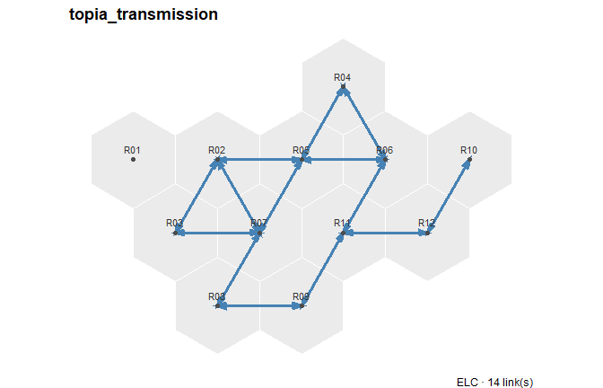
plot_trade_map(repo_fuel_trade, map = gs, comm = "GAS", level = "zone")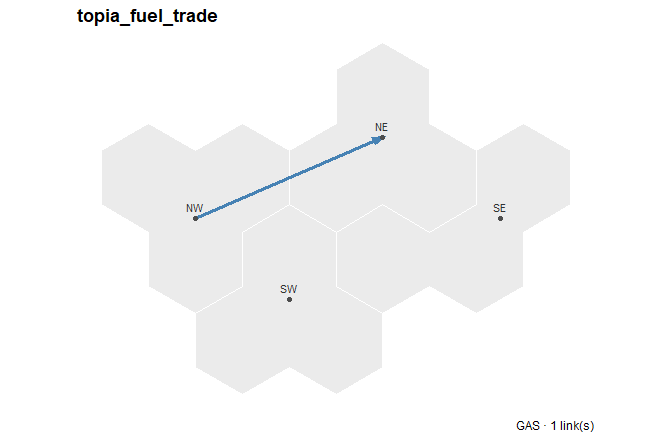
plot_trade_map(repo_fuel_trade, map = gs, comm = "COA", level = "zone")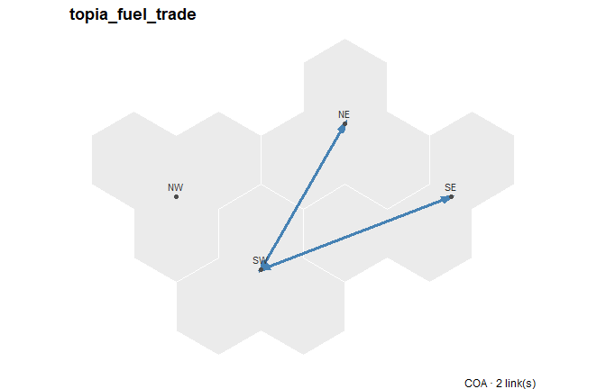
plot_trade_network(repo_transmission, map = gs)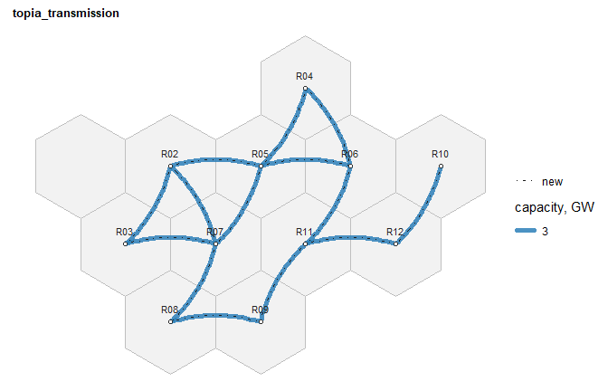
The fuel corridors run zone to zone, so they are absent from a
region-level drawing and need level = to appear at all:
plot_trade_network(repo_transmission, map = gs, level = "zone")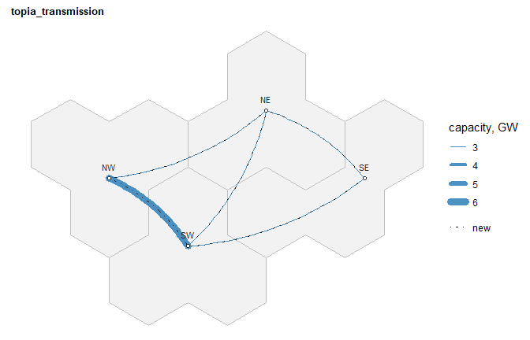
A single corridor draws on its own. R10-R11
is the one worth looking at: both its endpoints carry the
HI wind grade, so it is one of the three built out to 8 GW
rather than 3.
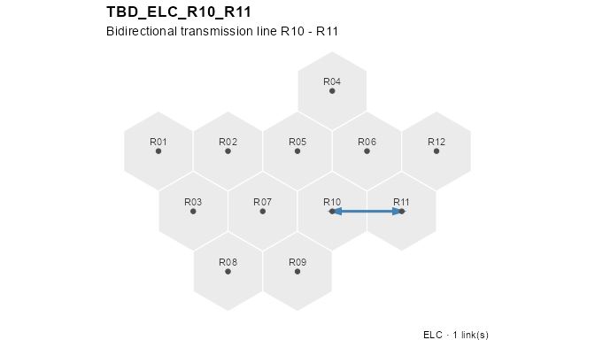
The repository
Each group of objects was collected into its own repository as it was
built: repo_commodities, repo_supply,
repo_weather, repo_generators,
repo_storage, repo_hydrogen,
repo_transmission, repo_fuel_trade and
repo_demand. A group can be inspected, drawn or swapped on
its own – repo_generators is the fleet,
repo_hydrogen the whole hydrogen chain declared across
three sections, and repo_transmission the electricity grid
kept apart from repo_fuel_trade because the two sit at
different geoframes and carry different units. Combining them gives the
model’s repository:
repo <- newRepository(
name = "topia",
repo_commodities,
repo_supply,
repo_weather,
repo_generators,
repo_storage,
repo_hydrogen,
repo_transmission,
repo_fuel_trade,
repo_demand
)
repo
#> repository 'topia': 51 objects.The model
TOPIA combines the repository with the region set,
calendar, horizon, 5% discount rate, and spatial hierarchy.
TOPIA <- newModel(
name = "TOPIA",
currency = "MUSD",
region = regions,
calendar = calendar,
horizon = horizon,
discount = 0.05,
data = repo
) |>
setGeoscale(gs)
TOPIA
#> Name: TOPIAScenario levers
Three optional scenario levers are defined but not added to the base repository: an emissions cap, a carbon tax, and early-retirement limits.
CO2_CAP <- newConstraint(
name = "CO2_CAP",
eq = "<=",
for.each = data.frame(
year = c(2025, 2030, 2040, 2050),
comm = "CO2"
),
term1 = list(variable = "vEmsFuelTot"),
rhs = data.frame(
year = c(2025, 2050),
rhs = c(5000, 2500) * length(regions)
),
defVal = Inf
)
CT_CO2 <- newTax(
name = "CT_CO2",
comm = "CO2",
tax = data.frame(
year = c(2025, 2050),
bal = c(0.02, 0.08)
)
)CT_CO2 raises the carbon price from 20 USD/t in 2025 to
80 USD/t in 2050.
EARLY_RET <- newConstraint(
name = "EARLY_RET",
eq = "<=",
for.each = expand.grid(
year = c(2030, 2040, 2050),
tech = c("ECOA", "EGAS"),
stringsAsFactors = FALSE
),
term1 = list(variable = "vTechCap"),
rhs = data.frame(
tech = rep(c("ECOA", "EGAS"), each = 3),
year = rep(c(2030, 2040, 2050), times = 2),
rhs = c(
12, 10, 8, # coal ceiling, GW per region
7, 6, 5
) # gas ceiling, GW per region
),
defVal = Inf
)EARLY_RET sets regional coal and gas capacity ceilings
for 2030, 2040, and 2050.
GREEN_H2 <- newConstraint(
name = "GREEN_H2",
desc = "Electrolysis capped by renewable generation in the same hour",
eq = "<=",
for.each = expand.grid(
region = regions,
year = c(2030, 2040, 2050),
timeslice = as.character(calendar@timetable$timeslice),
stringsAsFactors = FALSE
),
term1 = list(
variable = "vTechInp",
for.sum = list(tech = "H2ELC", comm = "ELC")
),
term2 = list(
variable = "vTechOut",
for.sum = list(tech = c("ESOL", "EWIN", "EHYD"), comm = "ELC"),
mult = -1
),
rhs = 0,
defVal = 0
)GREEN_H2 requires the electrolyser’s electricity draw to
stay within renewable generation in the same region and the same
timeslice. It is an hourly matching rule, of the kind used to
certify renewable hydrogen, rather than a physical separation: the same
renewable MWh may back both grid demand and electrolysis, because the
model balances one pooled electricity commodity and cannot trace
individual flows. Hydro counts as renewable here; biomass does not,
matching the attribution used in TOPIA II.
Two consequences are worth anticipating. The rule is binding, so hydrogen output falls and system cost rises. And the hydrogen it produces is not reported as wholly green by an average attribution: that convention divides the draw among everything generating in the hour, and fossil plants are still serving other loads at the time. The constraint and the attribution answer two different questions, which TOPIA II takes up with the solved results.